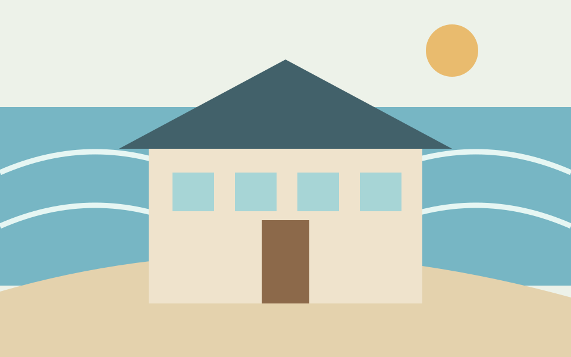

AI-DRIVEN QA TESTING
AIが出した「合格」を、
人が信じられる形にする。
AIで試験を設計・実行・記録し、根拠を付けて報告します。見つかった問題も、確認しきれなかった点も、そのまま書きます。
試験項目と、動画・レポートを見る
01 — STRENGTH
強みは、AI駆動の試験と、
根拠の残し方。
- 01
AIで、試験を回す
要求から試験項目を起こし、予約の操作・同時実行・失敗の再現まで、実ブラウザで実行します。人手では回しにくい確認を、繰り返し行えます。
- 02
期待結果に根拠を付ける
「合格」の基準は、要求や設計の記述に紐づけ、試験の前に決めます。画面の値は、保存されたデータと照合します。
- 03
未確認は、未確認と書く
確認できていない範囲を明記します。結果は Allure レポートと動画で、項目ごとに辿れます。
02 — CASE: SEASIDE INN
事例: 架空の民宿の予約サイトを、
AIで試験した記録。
対象は、海辺の民宿(全6室)を想定した予約サイトです。宿泊者が、部屋・料金・行き方を確かめ、空室を検索して予約するまでを扱います。民宿「なぎさ」は架空のデモ施設で、実在の宿泊施設ではありません。
試験は 16 項目(試験1〜試験16)を、独立確認 A・B・C の 3 回に分けて実行しました。実行は AI の担当者が行いました。
環境: 専用の実行環境と試験用データベース、実ブラウザ(Chromium)。画面幅は 320・390・1440 px。
試験対象のサイトを開く(別のタブで開きます)海辺の民宿 なぎさ(架空デモ)— 閲覧用コピー ↗
※これは静的な閲覧用のコピーです(トップ・客室・料金と宿泊・アクセス・問い合わせ・プライバシー)。予約サーバーは付いていないため、検索・予約・宿側の画面は動作しません。
- 1. 期待結果を先に決める要求から、試験項目と期待結果を作成
- 2. 独立確認 A試験1・2・7〜10。掲載内容、画面幅、キーボード操作、画像と連絡先
- 3. 独立確認 B試験3・4・11・12・14・16。予約、誤入力、複数泊、保存、宿側の照合
- 4. 独立確認 C試験5・6・13・15。失敗、再送、同時予約。最終の前の調整も、不採用の実行として記録に残した
これは、上の環境と条件での試験結果です。人による確認(スマートフォン実機での操作、写真の目視、事業者による承認、支援技術での確認、本番環境)は行っていません。また、実行と独立確認は同じ種類の AI によるもので、第三者の専門的な診断ではありません。民宿は架空のデモで、本番での品質を保証するものではありません。
03 — TEST ITEMS
試験項目の一覧
各項目から、Allure レポートと動画へ飛べます(別のタブで開きます)。Allure はレポート全体が開きます。確認 A は試験1・2・7〜10、B は試験3・4・11・12・14・16、C は試験5・6・13・15 を含みます。動画は、見やすいように実際の操作の 0.5 倍の速さで再生しています。
| 項目 | 試験名 | 確認すること | 比較数 | レポート | 動画 |
|---|---|---|---|---|---|
| 試験1 | 6室の掲載 | 6室それぞれの一覧と詳細で、名称・定員・設備・寝具・眺望・料金・共通設備が決めた内容と一致するか。 室ごとの画像が対応しているか。 | 345 | Allure(確認A) | なし |
| 試験2 | 料金と条件 | 全6室で、料金の単位・追加料金・食事・子ども・入退館・取消条件の表示と、料金例が、客室ページ・料金ページと一致するか。 | 303 | Allure(確認A) | なし |
| 試験3 | 予約と料金 | 検索→選択→確認→確定の各段階の内容が、保存された予約と一致するか。 料金 24,000 円、1 予約 2 室泊、予約番号。 | 30 | Allure(確認B) | 予約操作の動画 |
| 試験4 | 誤入力 | 氏名・メール・日付・人数の誤った入力が個別に拒否され、欄ごとの理由が表示され、予約も在庫も変わらないか。 | 101 | Allure(確認B) | 予約操作の動画 |
| 試験5 | 保存の失敗 | 保存の途中で失敗させても予約の残骸が残らず、解除後に同じ操作が成功するか。 失敗は試験用に 3 通り注入し、データベースのロック待ちも確認。 | 87 | Allure(確認C) | 注入1 注入2 注入3 ロック待ち |
| 試験6 | 再送 | 同じ予約の連打・再読込・通信切断後の再送で、同じ予約番号になり二重に保存されないか。 人数を変えた再送が拒否されるか。 | 35 | Allure(確認C) | 連打 1 連打 2 切断後の再送 |
| 試験7 | PC・スマホの導線 | 画面幅 320・390・1440 px で、全ページと、検索から完了までの導線が、横にはみ出さず操作できるか。 | 111 | Allure(確認A) | 320 px 390 px 1440 px |
| 試験8 | キーボード・入力補助 | 入力欄とエラーの関連付け、Tab 順とフォーカス、検索から確定までのキーボード操作ができるか。 | 87 | Allure(確認A) | なし |
| 試験9 | 画像・アクセス・連絡 | 内部リンクと画像が表示され、代替テキストがあるか。 架空の住所・案内図・交通・駐車場・連絡の表示が一致し、実際に送信されるリンクがないか。 | 125 | Allure(確認A) | なし |
| 試験10 | 専用データと証拠 | 試験専用のデータと実行記録を使い、既存のものを上書きしないか。 架空のデモと分かる注意が表示され、外部への通信が起きないか。 | 58 | Allure(確認A) | なし |
| 試験11 | 複数泊・満室 | 複数泊で空いている部屋だけが候補になり、満室の日が空になるか。 保存と日別の在庫が一致するか。 | 6 | Allure(確認B) | 予約操作の動画 |
| 試験12 | 境界・重複 | 宿泊日の境界の予約が成功し、同じ部屋・同じ日の重複予約が拒否され、残骸が残らないか。 | 9 | Allure(確認B) | 予約操作の動画 |
| 試験13 | 同時予約 | 2 人が同時に最後の 1 室を予約したとき、成功 1・競合 1 になり、既存の予約が変わらないか。 | 22 | Allure(確認C) | 利用者 A 利用者 B |
| 試験14 | 保存の持続 | 別のブラウザで同じ予約番号から内容が確認でき、アプリの再起動後も同じ内容が残るか。 | 7 | Allure(確認B) | 予約操作の動画 |
| 試験15 | 検索後の変化 | 検索後に空室・料金・条件が変わったとき、旧操作が拒否され、新しい内容の再確認と再同意の後だけ確定するか。 | 55 | Allure(確認C) | 空室の消失 A 空室の消失 B 料金の変更 条件の変更 |
| 試験16 | 宿側の照合 | 宿側の画面・API・データベースの予約が一致し、一般利用者や未認証のアクセスが拒否され、情報が漏れないか。 | 23 | Allure(確認B) | 予約操作の動画 |
04 — HOW I CHECK
AIの結果を、そのまま信じない。
期待結果は、試験の前に決める
期待結果を、要求・設計に根拠を持たせて先に決めます。実行後に基準を合わせません。
画面だけで合格にしない
画面の予約番号・金額・日付を、保存されたデータと照合します。失敗や同時実行も、実際に起こして確かめます。
うまくいかなかった実行も残す
最終の前の調整や、不採用にした実行も、記録として残しています。
確認できていない範囲を書く
実機・人の目視・事業者の承認など、結果が及ばない範囲を、報告に明記します。
05 — PROCESS
進め方
- 要求の整理対象と、確認したいことを伺います。
- 試験計画期待結果に根拠を付けた項目を作り、合意します。
- 実行と記録AIで試験を実行し、レポートと動画を残します。
- 報告合否、指摘、未確認の点、試験の範囲を報告します。